Full List of Award Recipients
2001-Current
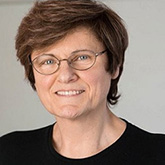
Dr. Katalin Kariko (2021)
Professor of Ophthalmology at the Perelman School of Medicine, University of Pennsylvania
For establishing the platform for constructing stable and safe mRNA to enable gene-induced immune response within the human body.
Dr. Drew Weissman (2021)
Professor of Medicine at the Perelman School of Medicine, University of Pennsylvania
For the development of the mRNA approach to enable gene-induced immune response within the human body.
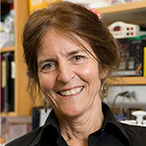
Dr. Jean Bennett (2020)
Professor of Ophthalmology at the Perelman School of Medicine, University of Pennsylvania
For developing gene therapies for curing retinal degeneration and ocular diseases.
Dr. William DeGrado (2020)
Professor of Pharmaceutical Chemistry at the University of California
For synthesis of novel peptides and proteins and the development of antimicrobial peptides.
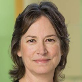
Emily A. Carter, PhD (2019)
Executive Vice Chancellor and Provost (EVCP), and Distinguished Professor of Chemical and Biomolecular Engineering, at UCLA
For innovation in theoretical and computation design of new materials.
Charles L. Kane, PhD (2019)
Christopher H. Browne Distinguished Professor of Physics at the University of Pennsylvania
For discovery of a new class of materials known as topological insulators
Eugene J. Mele , PhD (2019)
Christopher H. Browne Distinguished Professor of Physics and Astronomy at the University of Pennsylvania
For discovery of a new class of materials known as topological insulators.
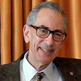
Michael L. Klein, PhD (2020)
Laura H. Carnell Professor of Science Theory/Computation at Temple University
For developing algorithms for computational simulation of biological systems and the development of antimicrobial peptides.
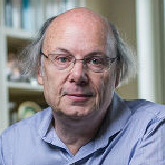
Dr. Bjarne Stroustrup (2018)
F. M. Kirby Professor of Ophthalmology in the Perelman School of Medicine at the University of Pennsylvania
For establishing the platform for constructing stable and safe mRNA to enable gene-induced immune response within the human body.
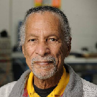
Dr. James West (2018)
Research Professor, Electrical and Computer Engineering & Mechanical Engineering. Johns Hopkins University
To recognize his inventions relating to the foil electret microphone
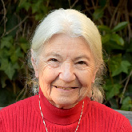
Dr. Ruzena Bajcsy (2017)
NEC Distinguished Professor of Electrical Engineering and Computer Sciences University of California Berkeley, CA
For her pioneering contributions to robotics and engineering science.
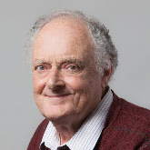
Dr. Warren Ewens (2017)
Australian-born mathematician who has been Professor of Biology at the University of Pennsylvania since 1997. (Emeritus Faculty) University of Pennsylvania, Philadelphia, PA
To recognize his research on the mathematical, statistical and theoretical aspects of population genetics.
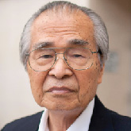
Dr. Masatoshi Nei (2017)
Emeritus Professor of Biology and Adjunct Professor at Temple University Philadelphia, PA
For his work in developing new concepts of evolutionary theory.
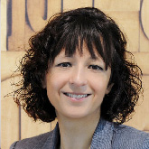
Dr. Emmanuelle Charpentier (2016)
Director, Max Planck Institute for Infection Biology, Berlin, Germany
For elucidating the molecular mechanisms governing CRISPR- Cas Systems, which defend prokaryotic cells against viruses and foreign nucleic acids, and for enabling the application of these systems as revolutionary tools for genome control and editing.
Dr. Jennifer Doudna (2016)
Doudna Lab, University of California, Berkeley, CA
For elucidating the molecular mechanisms governing CRISPR- Cas Systems, which defend prokaryotic cells against viruses and foreign nucleic acids, and for enabling the application of these systems as revolutionary tools for genome control and editing.

Dr. Feng Zhang (2016)
Broad Institute of MIT and Harvard and Investigator at McGovern Institute for Brain Res, MIT
For elucidating the molecular mechanisms governing CRISPR- Cas Systems, which defend prokaryotic cells against viruses and foreign nucleic acids, and for enabling the application of these systems as revolutionary tools for genome control and editing.
Dr. Carl H. June (2016)
Director of the Translational Research Program & Richard W. Vague Professor in Immunotherapy, Abramson Family Cancer Research Institute, Uiversity of Pennsylvania, Philadelphia, PA
To recognize his work on developing and testing novel forms of immunotherapy for cancer and chronic infections.
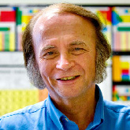
Dr. John P. Perdew (2015)
Laura H. Carnell Professor of Physics and Chemistry, School of Science & Technology, Founding Director, Center for Materials Theory, Temple University, Philadelphia, PA
To recognize Dr. Perdew for his key role in the development of density functional theory (DFT) which has led to a fundamental understanding and design of the structure and behavior of materials. He “derived exact properties of the exchange-correlation energy, using exact constraints to construct the approximations widely used for applications across condensed matter physics, chemistry and materials science.” He is one of the most cited physicists.
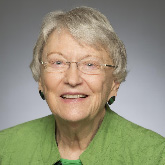
Dr. Madeleine M. Joullié (2015)
Professor of Chemistry, University of Pennsylvania, Philadelphia, PA
To recognize Dr. Madeleine M. Joullié’s research on the synthesis of natural products which has led to the creation of antiviral and antibacterial compounds, agents that can interfere with tumor angiogenesis, and other natural products used against cancer. Dr. Joullie has also developed compounds that are key elements of fingerprinting and forensic science.
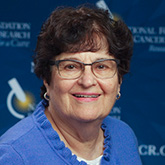
Dr. Susan Band Horwitz (2014)
Albert Einstein College of Medicine, NY Distinguished Professor & Co-Chair, Department of Molecular Pharmacology Rose C. Falkenstein Chair in Cancer Research Past President, American Association for Cancer Research
Recognized for her groundbreaking research in the development of drugs derived from natural products for the treatment of malignancies and on the challenges of dealing with the emergence of drug resistance in cancer.
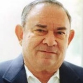
Dr. Leonard Hayflick (2014)
Professor of Anatomy, School of Medicine, University of California, San Francisco, CA. Fellow of the American Association for the Advancement of Science Founding Member, Council of the National Institute on Aging Former President, Gerontological Society of America
Recognized for their pioneering work discovery that, unline immortal cancer cells, normal human cells are mortal. His interpretation of mortality as cellular aging established the modern era of aging research, and his development of a human cell strain used to make most human virus vaccines has benefitted billions world-wide. He is the author of the best-selling book, "How and Why We Age," which has sbeen translated into nine languages.
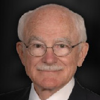
Dr. Paul S. Moorhead (2014)
Emeritus Professor of Genetics, University of Pennsylvania, Philadelphia, PA Past Director, Clinical Cytogenetics Lab at Children's Hospital, Philadelphia Past Supervisor, University of Pennsylvania, School of Veterinary Medicine Cytogenetics Lab
Recognized for his work at the Wistar Institute with Dr. Leonard Hayflick in the discovery that normal human cells are mortal, as well as his development of a technique for microscopically visualizing human and animal chromosomes that became a standard world-wide. The paper Dr. Moorhead co-authored in 1961 with Dr. Hayflick, "The serial cultivation of human diploid cell strains," has become one of the most frequently cited scientific papers in modern history. Dr. Moorhead won the National Institutes of Health Career Development Award on three separate occasions.
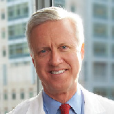
Dr, N. Scott Adzick (2013)
C.Everett Koop Professor of Pediatric Surgery at Children's Hospital of Philadelphia (CHOP) Surgeon-in-Chief, CHOP Director, Division of Pediatric General, Thoracic and Fetal Surgery Professor, Pediatrics, Obstetrics & Cynecology, Perelman School of Medicine University of Pennsylvania, Philadelphia, PA
Recognized for his contributions to the practice of fetal surgery, exploring cutting edge surgical treatment options for life-threatening fetal anatomic malformations.
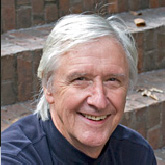
Dr. Peter. Leslie Dutton (2013)
Eldridge Reeves Johnson Professor of Biochemistry & Biophysics Director, Johnson Foundation of Molecular Biophysics Perelman School of Medicine University of Pennsylvania Philadelphia, PA Fellow of the Royal Society
To recognize his work on developing and testing novel forms of immunotherapy for cancer and chronic infections.
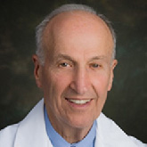
Dr. Robert L. Brent (2013)
Head of Clinical & Environmental Teratology Research Lab A.I. duPont Hospital for Children Distinguished Professor of Pediatrics, Radiology & Pathology Thomas Jefferson University Philadelphia, PA Member, Institute of Medicine, National Academy of Sciences
Recognized for his work on environmental causes of birth defects including exposure to drugs, chemicals, and ionizing radiation.
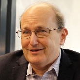
Dr. Paul J. Steinhardt (2012)
Albert Einstein Professor in Science Director, Princeton Center for Theoretical Science, Princeton University, NJ He is also on the faculty of both the departments of Physics and Astrophysical Sciences.
To recognize his work on developing and testing novel forms of immunotherapy for cancer and chronic infections.
Dr. Virginia Man-Yee Lee (2012)
Director of Center for Neurodegenerative Disease Research (CNDR), University of Pennsylvania,Perelman School of Medicine, Philadelphia, PA
Recognized for their groundbreaking research into the treatment of neurodegenerative diseases. Dr. Trojanowski's research centers on molecular mechanisms of neuron dysfunction, degeneration and death in normal aging and in neurodegenerative diseases. Dr. D.Lee's research focuses on disease proteins that form pathological inclusions in hereditary and sporadic Alzheimer's disease, Parkinson's disease, frontotemporal lobar degeneration, amyotrophic lateral sclerosis and related neurodegenerative disorders of aging. Their research provides critical evidence for the direction of new areas of research that are needed to identify targets and create better treatments for these debilitating diseases.
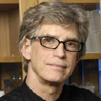
Dr. John Q. Trojanowski (2012)
Co-Director of Center for Neurodegenerative Disease Research (CNDR), University of Pennsylvania,Perelman School of Medicine, Philadelphia, PA
Recognized for their groundbreaking research into the treatment of neurodegenerative diseases. Dr. Trojanowski's research centers on molecular mechanisms of neuron dysfunction, degeneration and death in normal aging and in neurodegenerative diseases. Dr. D.Lee's research focuses on disease proteins that form pathological inclusions in hereditary and sporadic Alzheimer's disease, Parkinson's disease, frontotemporal lobar degeneration, amyotrophic lateral sclerosis and related neurodegenerative disorders of aging. Their research provides critical evidence for the direction of new areas of research that are needed to identify targets and create better treatments for these debilitating diseases.
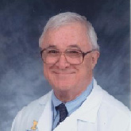
Dr. David E. Kuhl (2011)
Dr. Kuhl served as the Chief of the Division of Nuclear Medicine at the University of Michigan for 20 years and retired in 2011
Recognized for his groundbreaking work in positron emission tomography (PET). He pioneered the development of single proton emission computer tomography (SPECT), which led to PET. He remains a leading researcher in PET applications, particularly in the study of cardiovascular and brain function. His research is focused on introducing new measures of neurochemical and metabolic processes determined within the living brain, using radioactive molecular tracers and emission reconstruction tomography. He has also received the Japan Prize for his contributions to tomographic imaging in nuclear medicine and was elected to the Institute of Medicine of the National Academy of Sciences. He holds memberships and leadership positions in professional societies, including the American College of Radiology, American Institute of Medical and Biological Engineering, the Society of Nuclear Medicine, and the Association of University Radiologists.
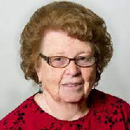
Dr. Jenny Pickworth Glusker (2011)
Fox Chase Cancer Center, Philadelphia , PA She was also an adjunct professor of biochemistry and biophysics at the University of Pennsylvania.
Recognized for her pioneering work in determining the three-dimensional structure of biologically important molecules. Dr. Glusker determined the molecular structure of a hexacarboxylic acid, derived from Vitamin B12, which led to the determination of the previously unknown chemical formula of Vitamin B12, the "anti-pernicious anemia factor," the largest molecular structure to be determined by x-ray diffraction methods as the time. Her work on the molecular structure of components of the Krebs cycle provided critical new insights into the molecular and biochemical aspects of metabolism. Her impact on our knowledge of the causes and possible treatment of cancer continued with her determination of the structures of numerous anti-tumor agents and important mutagens, including the polycyclic aromatic hydrocarbons benzo[a]pyrene and 7,12-dimethylbenz[a]anthracene, which are the major carcinogens in tobacco smoke. Her novel triangular plots to represent the positions of metal ions with respect to the three most likely binding atoms in proteins, oxygen, nitrogen and sulfur, and her skillful analyses have greatly expanded our understanding and appreciation of the roles of metals in catalysis.